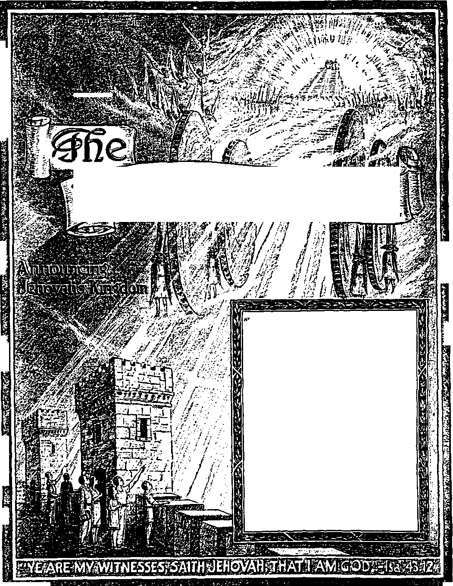

ll
*■
3
*■
*
£
s: ,ir 'tp
Wchtower
-Ezekiel 35:15.
Vol. LXIV Semimonthly
No. 9
£•1
MAY 1, 1943
CONTENTS
s»
Living for the New World ................
“Arm Yourselves” .............................
No More Time for the Old Course.
A Surprised Old World .................
Good News Preached to the Dead .
“The End of All Things” ................
Kingdom Work ....................................
Why No Salvation by Religion .....
Nimrod, Mighty Hunter
Before the Lord...........................
Letters ...................................................
Field Experiences...............................
. 131 .132 .. 134 .137 . 137 . 139 . 140 ..140
. 142 .143 .. 144
“The New World” Testimony Period 130
130
“Watchtower” Studies
Wielding the “Sword or the Spirit” 130
Use Renewal Subscription Blank......130
Published Semimonthly By
WATCH TOWER BIBLE & TRACT SOCIETY 117 Adams Street • - Brooklyn, N.Y., U.S.A,
Ofticebs
N. H. Knorr, President_________W E. Van Amburgh, Secretary
“And all thy children shall be taught of Jehovah; and great shall be the peace of thy children.” - baiah 54:13.
THE SCRIPTURES CLEARLY TEACH
THAT JEHOVAH is the only true God and is from everlasting to everlasting, the Maker of heaven and earth and the Giver of life to his creatures; that the Logos was the beginning of his creation, and his active agent in the creation of all other things, and is now the Lord Jesus Christ in glory, clothed with all power m heaven and earth, as the Chief Executive Officer of Jehovah;
THAT GOD created the earth for man, created perfect man for the earth and placed him upon it; that man willfully disobeyed God’s law and was sentenced to death; that by reason of Adam’s wrong act all men are born sinners and without the right to life;
THAT THE LOGOS was made human as the man Jesus and suffered death in order to produce the ransom or redemptive price for obedient ones of mankind; that God raised up Jesus divine and exalted him to heaven above every other creature and above every name and clothed him with all power and authority;
THAT JEHOVAH’S ORGANIZATION is a Theocracy called Zion, and that Christ Jesus is the Chief Officer thereof and is the rightful King of the world; that the anointed and faithful followers of Christ Jesus are children of Zion, members of Jehovah's organization, and are his witnesses whose duty and privilege it is to testify to the supremacy of Jehovah, declare his purposes toward mankind as expressed in the Bible, and to bear the fruits of the Kingdom before all who will hear;
THAT THE OLD WORLD ended in A. D. 1914, and the Lord Jesus Christ has been placed by Jehovah upon his throne of authority, has ousted Satan from heaven and is proceeding to the establishment of the “new earth” of the New World;
THAT THE RELIEF and blessings of the peoples of earth can come only by and through Jehovah's kingdom under Christ, which has now begun; that the Lord’s next great act is the destruction of Satan’s organization and the complete establishment of righteousness in the earth, and that under the Kingdom the people of good-will that survive Armageddon shall carry out the divine mandate to "fill the earth” with a righteous race.
ITS MISSION
HIS Journal is published for the purpose of enabling the people to know Jehovah God and his purposes as expressed in the Bible. It publishes Bible instruction specifically designed to aid Jehovah’s witnesses and ail people of good-will. It arranges systematic Bible study for its readers and the Society supplies other literature to aid in such studies. It publishes suitable material for radio broadcasting and for other means of public instruction in the Scriptures.
It adheres strictly to the Bible as authority for its utterances. It is entirely free and separate from all religion, parties, sects or other worldly organizations. It is wholly and without reservation for the kingdom of Jehovah God under Christ his beloved King. It is not dogmatic, but invites careful and critical examination of its contents in the light of the Scriptures. It does not indulge in controversy, and its columns are not open to personalities.
Ybarlt Subscription Price
United Statzs, 1100: all other countries, $1.50, American currency: Great Britain, Australasia, and South Africa, 6s American remittances should be made by Postal or Express Money Order or by Bank Draft. British, South African and Australasian remittances should be made direct to the respective branch offices. Remittances from countries other than those mentioned may be made to the Brooklyn office, but by International Postal Money Order only.
FOREIGN OrriCES
British ...........-......... 34 Craven Terrace London, W 2, England
Auarrolaslaa________7 Beresford Road, Strathfield, N S. W„ Australia
South African Boston House, Cape Town. South Africa
Indian _______....____________________40 Colaba Road. Bombay 5. India
Please address the Society In every case.
Translations of this journal appear in several languages.
ALL SINCERE STUDENTS OF THE BIBLE who by reason of Infirmity, poverty or adversity are unable to pay the subscription price mav have The Watchtoicer free upon written application to the publishers, made once each year, stating the reason for so requesting IL We are glad to thus aid the needy, but the written application once each year u required by the postal regulations.
Notice to Subscribers: Acknowledgment of a new or a renewal subscription will be sent only when requested. Change of address, when requested, may be expected to appear on address label within one month A renewal blank (carrying notice of expiration) will be sent with the journal one month before the subscription expires.
Printed In the United States of America
Entered ae eecond-elase matter at the post ojfice at Brooklyn. N T.. under the Act of Hatch 3, 1ST9
“THE NEW WORLD” TESTIMONY PERIOD
All persons who love righteousness want to see a new world. How wrll it be brought about and established for evert Only through the Kingdom of Christ, for which kingdom his followers hate prayed for 1900 years The proof of this is set forth in the publication The New World, and you will be delighted in reading it. Send your 25c contribution to this Society and learn what the Bible has to say about the new world. There will also be sent to you the booklet Fighting for Liberty on the Home Front. All persons who desire to have a share in the proclamation of the Kingdom will, during the month of June, call on as many people as they can, announcing this new world. The Society has designated the month of June “The New World” Testimony Period; hence throughout all the countries of the world proclamation will be made concerning this new world. If you desire to share in this work of making known the good news, get tn touch with one of the local companies of Jehovah’s witnesses or write direct to the Watchtower Society, 117 Adams St., Brooklyn, N. Y.
“WATCHTOWER” STUDIES
Week of June 6: “Living for the New World,” 1i 1-19 inclusive, The Watchtower May 1, 1943. Week of June 13: “Living for the New World,” JI 20-39 inclusive, The Watchtower May 1, 1943.
WIELDING THE “SWORD OF THE SPIRIT”
One book with which every person should be well acquainted is the Bible. In the words of the apostle, the Bible is the “sword of the spirit”. To get better acquamted with it, we suggest that you obtain what is known as Bible No. 10, from the Watch Tower Bible & Tract Society. It is an edition of the Bible that is easily handled, has clear type, marginal references, concordance, and many other helpful features that a student of the Bible will greatly appreciate. Learn how to wield the “sword of the spirit” by studying it yourself, regularly, in your own home. This Bible No. 10 can be obtained on a contribution of $1.00. It is bound in red leatherette cloth, and printed on Bible paper.
USE RENEWAL SUBSCRIPTION BLANK
The blank sent you one month before expiration of your Watchtower subscription should be filled out and returned to the Brooklyn office or to the Branch office in the country where you reside. Servants in the companies, and individuals, when sending in renewals for The Watchtower, should always use these blanks. By filling in these renewal blanks you are assured of the continuation of your Watchtower from the time of expiration, and without delay. It will also be a great help if you sign your name uniformly, and note any recent change of address, on the renewal slip.
Vol. LXIV May 1, 1943 No. 9
"But in God’s will ye may live the still remaining time. For sufficient is the bygone time to have wrought out the icill of the nations, . . . But the end of all things hath drawn near.”
—1 Pet. 4:2, 3, 7, Rotherham.
JEHOVAH sets before faithful men and women the certain hope of life in the New World. This present world is a world of evils, disappointments, pain and suffering, religion, and death. This world is limited. It has existed since the great flood of Noah’s day, which brought an end to the previous “old world”, a “world of the ungodly”. Like its predecessor, this world is a world of ungodliness, and its end is now clearly in sight in a mighty cataclysm than which not even the terrible flood was more stupendous and catastrophic. The days of “this present evil world” are numbered. The days of the New’ World, which Jehovah God brings in with righteousness, will be numberless; it will be a “world without end”. To enjoy it one will have to live for ever. Existence in this world is uncertain and quickly passing. All the selfish things in which one can indulge during this present existence are not to be compared with the clean, satisfying and eternal things of the new world which is at hand. It is high time to begin living for the New World. Unspeakably favored will be all those who gain “in the world to come eternal life”. (Mark 10:29,30) Members of this generation who long to gain this glorious prize must break off with this old world before its disastrous end. They must begin living now in unwavering expectancy of the New World. This is no message of gloom. There is no reason to mourn over the destruction of the old world. It is time to rejoice in hope of the early realization of the New World.
2 Selfish men, with no faith in the meaning of the signs of the times as explained in God’s Word, scoff at the gladsome message of the new world which God builds. Their prototype was found in the days of the end of that ungodly world before the flood. “But as the days of No'e were, so shall also the coming of the Son of man be”; so said the greatest prophet ever on earth. Hence one of the disciples of that infallible Prophet wrote foretelling the things we
1 (a) The hope of life where does Jehovah <et before his faithful ones, and to what extent will they have to live to enjoy it? <b) For what is it now high time to begin living, and bow?
2. According to prophecy, how were selfish men to be expected to act at the New World message, and wb>? have seen and heard since A. D. 1914: “Be mindful of the words which were spoken before by the holy prophets, and of the commandment of us the apostles of the Lord and Saviour: knowing this first, that there shall come in the last days scoffers, walking after their own lusts, and saying, Where is the promise of his coming? for since the fathers fell asleep, all things continue as they were from the beginning of the creation.” (2 Pet. 3:2-4) In such words the self-conceited and self-reliant men speak openly and publicly, not even believing in the genuine record of the flood which smote the entire earth sixteen centuries after the creation of the first man. Such leaders in religion, politics and commerce are too much wrapped up and preoccupied in developing schemes of a postwar world. They have absolutely no love for the New World of righteousness for which Jehovah God in his so great love gave his only begotten Son, that men might live forever and rejoice in the “land of uprightness”.—John 3:1G
’ The worldly-wise planners for the postwar “world of tomorrow” pin their hopes to their own wisdom, ability and scientific training to create a new order that will put to shame the human civilizations of the past. To justify their all-out part in this present total war, and to keep the people's faith in them, they envisage and promise great and alluring things for all mankind after the conflict ends in victory. It is to be a “new order founded upon moral principles” with freedom of religion; it is to be a “world of the common man”. Not one of them can promise that the postwar period will be a world of the true and only living God. Not one of the new-order builders can promise that it will be a world of everlasting life to man. Not one of the signers to a charter of freedoms for regimented mankind can guarantee that it will be a world of freedom from demon rule. Inasmuch as they cannot even dare to promise such all-essential things, their promises fall tremendously short of what God promises and
3. On what do the planner* of tomorrow’s world rely, how do they justify their present war, and in wbat ways do their promisee fall short ’
what he has the power to fulfill completely in the New World for which his beloved Son died. Why then put your trust in man!—Ps. 146:3,4.
* This is no time to be deceived by the boastful prophesyings and foundationless promises of imperfect men doomed to death and facing destruction at this old world’s end. The time is too short to continue living as does the perishing old world; yes, too short to take chances with the bungling experiments of worldly leaders who are at their wits’ end, hoping for a reconstruction of the old world so as to keep on living in selfish gratification. The shock of early and bitter disappointment awaits persons who yield to the great delusion sweeping over the earth and who work and expend themselves for the perpetuation of the old world. And that disappointment is the forerunner of destruction. The day of decision is here. Those who fondly desire life without any dis-illusionments must now determine and choose. Will they believe and be entrapped by the glowing propaganda of the old-world prophets? or will they believe and act upon the sure promises of God’s Word? “Let God be true, but every man a liar.” (Rom. 3:4) To believe God and his Word as true, man’s words to the contrary, is being realistic. The prophecies of his Word are realities today, as a comparison of them with world conditions and events proves beyond honest denial. The prophecies of God, who is true, will go on fulfilling until, shortly, the demonized old world will have disappeared at Armageddon. Then Jehovah’s righteous New World will be a grand reality for those who now live, hope, and work for it, and who boldly proclaim it to others.
8 Those who love truth and righteousness will not be dismayed because a choice of Jehovah God and his new world will require such a radical change of living and of viewpoint from that of the people of the world. To those who profess to be Christian the challenging command is given: “Be not conformed to this world: but be ye transformed by the renewing of your mind, that ye may prove what is that good, and acceptable, and perfect, will of God.” (Rom. 12: 2) The loud professions of all religionists to Christianity are insincere, hypocritical and selfcondemning until they break off conformance with this world and are transformed in mind, purpose and life for the imminent new world. Those who are seriously bent on taking the unerring path that leads to life under God’s kingdom can not afford to be caring about what men of this world will think about them and do to them. Popularity and friendship with the world has never yet brought life and
4. (a) Why la this do time to be deceived and keep on living as heretofore ’ (b) Why La the choice of believing God and bis Word being realistic ?
5. (a) Until what Is done will the loud professions of religionists to Christianity continue to be hypocritical? (b) Why can not the persons seeking life afford to care about what this world thinks or does concerning them ?
never can bring it; rather, worldly good-standing means disapproval and enmity with God, the Fountain of everlasting life. (Jas. 4:4) Why? Because the old world is not of God nor for Him, and there is enmity between the old world and the new world.
• To abandon the course of this world and walk in the glorious light and service of the righteous “world to come” means that the old world will range up in ridicule and hostility against you. For popularity (in times past) with it you, because “ye run not with them”, will get persecution from it. However, such was foretold and is proof positive that you are on the right side and are in the pathway to life in a worthwhile and perfect world. Christ Jesus is the “foundation” which God laid for that New World, and Jesus counted it worthy of suffering for and dying at the hands of sinners. Can those who now follow him and prove worthy expect to gain life and blessings in that world in the easy way ? Did he suffer and die to make it easy for us? No; but to show what it takes, and to leave us an example that we should follow his steps. By so doing, we too shall win, to God’s glory. Arm yourselves accordingly.
“ARM YOURSELVES"
T “Forasmuch then as Christ hath suffered for us in the flesh, arm yourselves likewise with the same mind: for he that hath suffered in the flesh hath ceased from sin; that he no longer should live the rest of his time in the flesh to the lusts of men, but to the will of God.” (1 Pet. 4:1) In the most ancient Bible manuscripts the words “for us” do not appear, but it reads: “Forasmuch then as Christ suffered in the flesh, arm ye yourselves also with the same mind.” (American Revised Version) Why or for what did Christ suffer, and with what mind or purpose did he fortify himself to endure the suffering without change of mind till death? It was this: There is an issue of the highest importance to God to be settled, and Christ Jesus fixed his mind on being on the right side of that issue, suffer what he must, and sticking there and upholding it to the death. That issue was and is God's universal domination, which the jealous adversary, Satan the Devil, has challenged before all creation. Jesus' mind or purpose was one of perfect and complete devotion to his Father’s universal domination, from which mind it was impossible by any satanic means to swerve him. Satan had grossly sinned in challenging Jehovah’s universal domination and putting it in doubt in the minds of men and legions of angels. So it would be sin for Jesus and his followers to question and depart from under the rightful
6. What will the abandoning of the world's course mean to one who walks according to the “world to come", and why may we not expect the way to life there to be easy?
7. Why did Christ suffer, and with what mind did be arm himself to endure unchangeably unto the death? domination of Jehovah God and to worship and serve any other than Him. Never once did Jesus let it enter his mind to sin thus.
' Satan’s rebellious course in Eden and his misleading of man brought great reproach upon the name of Jehovah God and trampled His word and law to the earth. If a trusted officer in a responsible part of God’s government proved unfaithful and questioned Jehovah's power, authority, right, and supremacy, then how could Jehovah God depend upon his creatures in any other part of his universal organization’ This was the question that Satan raised. He also purposed to show that all God's creatures were undependable and that Satan could induce them to renounce and curse God to his face and join Satan as their god and leader. If God immediately killed Satan the Devil, that would not settle the issue as to the integrity of God’s other creatures and as to their own willing choice of and unbreakable adherence to Jehovah’s universal domination. To prove that the love and devotion to the Most High God and his righteousness is stronger than Satan and all that Satan can do, Jehovah God must permit him to remain and let him employ all his power and craftiness to prove his false charges, until the limit is reached. Then Satan having failed and shown himself up to be an ambitious self-seeker, liar and false deity, Jehovah God .vould cap the climax by destroying Satan and his organization and in so doing exhibit the almighty power and supremacy of the Most High God.
9 Satan the Devil corrupted the world which Jehovah God had first set up over mankind. Thus the rule of God's holy cherub became demon rule. Satan prevailed upon legions of the holy angels to forsake holiness and to line up under him as their prince and to become demons, devils, the “seed" of the Serpent. These constituted the demonic invisible government over humankind. There at Eden, when God sentenced Satan the Serpent and his "seed’’ to destruction at God's due time, Jehovah promised to establish a New World under a righteous heavenly government, the Government in the hands of the “seed” of his “woman”. Until the birth of that Government from God's holy organization or “woman" God would defer the execution of Satan and his demonic “seed”. He would permit Satan and his seed to operate in defiance of God. Christ Jesus is primarily the “seed” of God’s “woman”, because the Lord Jesus is the One anointed to be the Head of the Righteous Government that shall execute Satan and his seed. He is “The King of kings”. His associate “kings” in the Government are the members of his body, the church.
They are made part of the “seed” of God’s “woman" by being adopted as the spiritual children of God and brought into the “bodv of Christ", under its Head, Jesus.—Gen. 3:15; Rev. 12:1-5; 17: 14; 1 Cor. 12:12,18,27; Col. 1:18.
10 There is no love between the old world and the new. Jehovah God declared there should be enmity between the two seeds. The enmity of the “seed” of God’s “woman” would be expressed by overcoming the world and completely destroying it. The enmity of Satan the Serpent and his seed would be expressed by opposing all who lived in hope of God's coming kingdom and all who were put in line for membership in that Royal Government. The purpose would be to destroy all such and to suppress all information and testimony of the Kingdom, so to keep all peoples in ignorance thereof. Satan and his seed would cause a lot of damage and would strike in the dark and from the back, but would succeed only in bruising the heel of the holy “seed”. This, indeed, would be quite painful and cause much suffering to Christ Jesus and his faithful followers and body members. By false doctrines, in denial of God’s. Word, Satan had used religion to turn Adam and Eve aside from God’s government. Satan would henceforth use religion to deceive, if possible, all those who should believe God’s promise of the New World and its Government and take their stand for it and bear witness to mankind concerning it. If Satan failed to deceive the faithful by religious enticements, then he would, under the self-righteous cloak of religion, carry on a persecution against them to break their integrity and to force them to renounce the Lord God and His universal domination. He would bring great suffering upon them unjustly in the effort to compel them to commit the sin of breaking their covenant to do God’s will and rebelling against Him.
11 Now that the Righteous Government has been born in the heavens and the New World is at hand, the adversary knows his time is short to operate further his wicked world in defiance of Almighty God. In his rage Satan and his demons bring great woes upon the people to embitter them against God, and they also line up all the forces of the old world and its nations against those who have chosen the new world and who are proclaiming it. How possibly can Jehovah’s witnesses and their good-will companions endure the world pressure, overcome it and keep covenant with God and preserve their integrity? It is by “looking unto Jesus the author and finisher of our faith; who for the joy that was set before him endured the cross, despising the shame, and is set
10 How would “enmity” between the two opposing seeds be expressed’ and. when failing with religion, what would Satan use against the faithful’
11 . By looking to whom can Jehovah’s witnesses and companions bear up and overcome world pressure, and why by looking to Him1 2 3 4 down at the right hand of the throne of God. For consider him that endured such contradiction of sinners against himself, lest ye be wearied and faint in your minds”. (Heb. 12:2,3) Christ Jesus, the King of the New World, chose to 'suffer in the flesh’, that he might uphold God's side of the universal controversy and prove worthy to be the Head of the kingdom. That Government will vindicate God’s name, not only by its power to destroy Satan, but also by the irreproachable integrity of its members, Christ Jesus the Head and the 144,000 members of his body, the church. To prove that Satan and all his world of demons, religion, politics, and commerce had no power to force him from his eternal course of faithfulness to his heavenly Father, the Son of God came to earth. He ’‘was made flesh”, that he might suffer and die for the vindication of God’s name. He chose suffering rather than sin of unfaithfulness.
“ The lover of God and his New World will not flinch before the prospect of sufferings for living for the New World: ‘‘because Christ also suffered for us, leaving us an example, that ye should follow his steps: who did no sin, neither was guile found in his mouth.” (1 Pet. 2:21,22) All you who are devoted to the vindication of God’s name will “arm yourselves likewise with the same mind”, “with the same purpose.” {Roth.) That mind is to be submissive to the will of God, although it entails suffering at the hands of the Devil’s crowd; and to seek always the glory and vindication of the Most High God and to abide by his universal domination now and for ever.
IS The only begotten Son of God. being heavenly and spirit, was in the “form of God”; yet he did not follow Satan's course and try to make himself equal with God and grasp the universal domination out of his Father’s hands. He joyfully submitted to the domination and will of the Supreme One. Wherefore, “have this mind in you, which was also in Christ Jesus: who, existing in the form of God, counted not the being on an equality with God a thing to be grasped, but emptied himself, taking the form of a servant, being made in the likeness of men; and being found in fashion as a man, he humbled himself, becoming obedient even unto death, yea, the death of the cross.” Was this the better course for him to take rather than to commit the sin of unfaithfulness to his covenant and rebellion against the Most High God! Yes; “wherefore also God highly exalted him, and gave unto him the name which is above every name; that in the name of Jesus every knee should bow, of things in heaven and things on earth and things under the earth, and that every tongue should confess that Jesus Christ is Lord, to the glory of God the Father.”—Phil. 2: 5-11, Am. Rev. Ver.
“ Arming ourselves with this mind of Christ will help us to overcome Satan and his world and their power to entice or frighten or coerce us into the sin of disloyalty and insubordination to God. Know this, that integrity and keeping covenant toward God to do his will faithfully to the end cannot be sustained without suffering, as long as this old world stands, and particularly now in the “time of the end”. The mind of Christ is one of unswerving determination to prove true and faithful to God while the Devil's world lasts, let the old world cause what suffering God permits it to bring upon his faithful and devoted servants. It is the mind or purpose never to sin just to escape suffering. “For he that hath suffered in the flesh hath ceased from sin.” (1 Pet. 4:1) To thus suffer in the flesh is to the glory of God and to the vindication of his name and Government. Hence it is better than to side-step suffering for righteousness’ sake and be pushed into the gross sin of covenant-breaking and disloyalty to God. Such sin means everlasting destruction, hence loss of all hope and right to life in the New World. He that in the unchangeable mind of Christ chooses and counts it a privilege to ‘suffer in the flesh’ as He set us the example “hath ceased from sin”. He does not for one moment entertain the thought of compromising with the world and committing the sin of treachery to God.
NO MORE TIME FOR THE OLD COURSE
” As long as this old world lasts and the regeneration in the new world is yet future, creatures on earth must exist in flesh imperfect and filled with weakness. “I was shapen in iniquity; and in sm did my mother conceive me,” declares the psalmist for all the human race. (Ps. 51:5) Hence even those who enter into covenant relationship with God and take their stand for his Rule of the New World are subject to sins. Such sins are not willing ones, but are due to the weakness and imperfectness of the fleshly body and its motions to sin. Hence to the faithful Christians in the flesh the apostle John writes: “The blood of Jesus Christ his Son cleanseth us from all sin. If we say that we have no sin. we deceive ourselves, and the truth is not in us. If we confess our sins, he is faithful and just to forgive us our sins, and to cleanse us from all unrighteousness. If we say that we have not sinned, we make him a liar, and his word is not in us. My little children, these things write I unto you, that ye sin not. And if any man sin, we have an advocate
14 How has one who has suffered in the flesh because of arming him self with the mind of Christ “ceased from sin”’’
15 Why must earthly creatures exist in imperfect, weak flesh till the new world, and to what sins are they therefore unavoidably subject1 with the Father, Jesus Christ the righteous: and he is the propitiation for our sins: and not for ours only, but also for the sins of the whole world." —1 John 1:7-10; 2:1,2.
18 Christ Jesus, being born perfect in the flesh by God’s miraculous power, was not subject to such sins. The sins to which Satan tried to tempt him were those of disobedience to God's universal sovereignty, and of unfaithfulness to Jehovah as the worshipful God, and of seeking to please self rather than suffer for righteousness. Such sin Jesus in the flesh “resisted unto blood". For his followers and servants of God to commit such sins means willful wickedness; for such gross sins there is no forgiveness or propitiation. Gladly suffering rather than to practice such sins means to be like Jesus.
17 Let no one deceive himself: sin is sin, whether due to inborn tendencies and weakness or due to willful choice. One cannot indulge willingly in any form of sin. One dare not delude himself into thinking he may safely indulge in the “common sins of the flesh”, so called, and do so willingly for the selfpleasure thereof, and yet avoid committing the unforgivable sin of covenant-breaking and disloyalty to God and his kingdom. That delusion is a trick of Satan. It leads to disaster. Conscious and deliberate unfaithfulness in small or petty things of sin develops, if unchecked, into gross sin of covenantunfaithfulness and hypocritical renunciation of God. Therefore, “hold fast that which is good; abstain from every form of evil."—1 Thess. 5:21,22, Am. Rev. Ver.
18 If you have determined to suffer rather than sin, and have therefore “ceased from sin", then there is no occasion or room to practice sin of any sort with consent and in self-indulgence. You must “arm yourselves" with the purpose and determination not to leave any loopholes for the invasion of the sin of disloyalty and rebellion, nor to indulge any weakness which the demons can play upon to the undermining of your strength of purpose. Turn your back upon it: how? “That ye no longer should live the rest of your time in the flesh to the lusts of men, but to the will of God.” (1 Pet. 4: 2, Am. Rev. Ver.) That means, you must serve the Lord, not merely by being clean in thought, word and action, but by keeping his commandments to declare his name through the earth and to bear testimony to the Kingdom of the New World. (Ps. 119: 2, 3) When we are serving the Lord in diligent performance of his commandments, then we are not sinning. We cease from sin; and the demons of malicious intent do not have the chance to take advantage of us and to overreach us and trap us into sin. They can only cause us suffering; but, armed with the mind of Christ, we have determined to endure that for God's name's sake.
” The Watchtower has repeatedly published the proof, both from Scripture and from physical facts since 1914, to show that Satan’s world or uninterrupted rule ended that year and he and his demons were cast out of heaven and down to this earth, and that these are “the last days”. None can deny these are “perilous times”. This is the old world’s sorrowful “time of the end". The Theocratic Government under Christ Jesus is bringing it to its terrible end, and the everlasting New World is upon us. Satan “knoweth that he hath but a short time” till the final end. (Rev. 12:12) No less so, “the rest of your time in the flesh” subject to imperfection, to weakness and to assaults of the demons and their dupes is also short. It is a time short enough, indeed, to devote to living “to the will of God” and thereby to prove the Devil a liar and a false god, having no power to turn you from the love and service of the only true God. Any commonsense view, as well as enlightenment from God’s Word, shows that it is urgent now, before the final end at Armageddon, to be “redeeming the time [that is, buying it out at cost of non-essential things], because the days are evil". “Wherefore be ye not unwise, but understanding what the will of the Lord is. And be not drunk with wine, wherein is excess; but be filled with the spirit.” (Eph. 5: 16-18) Those who do not ‘redeem the time’, but who continue to “live the rest of [their] time in the flesh to the lusts of men", are not living for the New World and will not have divine protection to survive the battle of Armageddon and see the “world to come".
20 It is bad enough that we indulged self and served sin in the past, not to speak of continuing to do so in the future until stopped at Armageddon. “For sufficient is the bygone time to have wrought out the will of the nations, having gone on in wanton ways, covetings, wine-drinkings, revellings, drinkingbouts, and impious idolatries: wherein they are taken by surprise that ye run not with them into the same overflow of riotous excess, uttering defamation: who shall render an account unto him who is holding in readiness to judge living and dead.” —1 Pet. 4:3-5, Rotherham.
21 In these words the apostle Peter directly addressed those who had already come out from this world of religion, politics and commerce. They had believed on Jesus Christ as God’s provision for sal-19. In behalf of Hiring to the win of God’, why should one now be “redeeming the time’0 and what about those who do not do so’ 20. Why is the bygone time sufficient as to doing the will of the Gentile nationa?
21. To whom was the apostle Peter addressing the aboie-quoted words’ and why is It inconsistent for them to go any longer tn the way of the nations?
ration and had consecrated themselves wholly and unconditionally to God and his use. They had then been justified from sin and been begotten of God’s spirit and were “elect” ones in line for membership in the kingdom of God’s dear Son. They had thereby become “strangers and pilgrims”, being “in the world, but not of it”. They were no more of the nations, but had been taken out from the nations to be a “people for His name”; and Peter was the one whom God used when He first visited the nations to take out those to compose his name-people. They must therefore be Jehovah’s witnesses, bearing testimony to the name of the Lord God. (Acts 15:14; Isa. 43:10-12) The nations are the visible part of this world and are under “the god of this world”, hence under demon rule. (2 Cor. 4:4; John 14: 30) Having been taken out from such nations through the redemptive sacrifice of God’s Son, it is altogether improper for his people longer to go in the way of the nations, according to the traditions of the nations of the doomed world. “Forasmuch as ye know that ye were not redeemed with corruptible things, as silver and gold, from your vain conversation [conduct] received by tradition from your fathers; but with the precious blood of Christ, as of a lamb without blemish and without spot: who verily was foreordained before the foundation of the world, but was manifest in these last times for vou.”—1 Pet. 1: 18-20. '
22 The nations are now going in the way of total war and totalitarian rule. Revelation 16:14-16 clearly discloses that the democratic nations are being coerced by the demons into that way because they do not have faith according to the Scriptures in Jehovah God and his kingdom, but follow religious traditions. In all nations now there is rationing of living necessities. In the countries that have been reduced by the aggressions of the totalitarian monstrosity there is not at present much opportunity for wine-drinkings, drinking-bouts, banquetings, except among the Nazi-Fascist-Vatican leaders and those who stand in the favor of the party and the Hierarchy. These make capital of the situation, while the common people endure toil and wretchedness. In some of the countries assertedly at war with the Nazi-Fascist powers the increase of government spending and of employment or the conscription of labor has produced a form of prosperity, especially in financial earnings and savings. The temptation in such lands is to revelings, excess of wine, banquetings, and other things that can be provided by money for self-indulgence.
23 However, in all the lands, whether war-ruined or yet booming with war activities, the published reports show there is wanton conduct, covetings, and unlawful idolatries. Diseases due to wanton acts among the adults and also the school children are increasing; covetings for the ease, comforts, approval and honors of this world have enlarged; worship of the state and of symbols and human representatives of the state has reached new extremes, and the demons are regimenting the people en masse into “abominable idolatries”, contrary to the law of Jehovah God.—Ex. 20:3-5.
24 To soothe and further subjugate the distressed people the “three unclean spirits like frogs” croak out grandiose prophecies about the postwar world. In pursuit of this will-o’-the-wisp many political, military, commercial, social and religious committees have been formed and are engaged in postwar planning, to “win the peace”. The aim is “permanent peace of the world”, in order to restore and increase world trade and to hold it, and to bring about a great commercial expansion. Certain economic institutions expect, instead of the predicted economic collapse, a period of great prosperity for a few years immediately following the war. The appeal of such postwar world, as described by its proposed builders, is not to a love of the righteousness of God’s kingdom under Christ, but is to selfishness, covetings, world-satisfaction; that the peoples may as in the past continue to walk on “in lasciviousness, lusts, winebibbings, revellings, carousings, and abominable idolatries”. (Am. Rev. Ver.) Then with a world-federation government and an international police and world court they will have greater power to enforce the worship of the idol of man-rule, “the abomination of desolation,” “the image of the beast.” They will stand it up in power as a man-made substitute for God’s kingdom. Religion will be priest thereof.
25 The test is on, of faith in God’s Word and of devotion and faithfulness to his kingdom and its righteousness. All professing Christians and persons of good-will must now prove whether they are living for this world and working for that short-lived, deceptive postwar epoch, or are living for the righteous New World of endless success. The time past of the lives of Christians suffices for them to have wrought the will of the nations, going in the way of the worldly majority. Why spend any more time in following worldly leaders, to self-hurt? The German people did that, by following the pope’s man, Hitler, just as the Italian people followed the pope’s concordat-partner, Mussolini. They refused to heed the warning and the Kingdom proclamation of Jehovah’s witnesses, but followed religion and
24. What worldly Activities, accompanied by what expectations, concerning a postwar world are now going on? and to what does the description of such postwar world appeal?
25. On what points is the test now in progress, and what folly did the people of Germany and of other nations spend time in following, with the present-day results? dictator politics and permitted the Axis powers to put the few thousands of Jehovah's witnesses into concentration camps. What have the peoples of the Axis countries and partners today? The other nations that looked on and made no protest to this shameful mistreatment of Jehovah’s servants, what have they for their refusal to intervene for freedom of press, assembly and worship?
A SURPRISED OLD WORLD
25 Wien you exercise faith in and obedience to the Word of God and refrain from going on in the world’s headlong plunge to destruction at Armageddon, what? The rulers and their subjects think you strange and feel self-condemned by their own worldliness. “Wherein they think it strange that ye run not with them into the same excess [flood; overflow; sink] of riot [of dissoluteness], speaking evil of you.” (1 Pet. 4: 4, Am. Rev. Ver.) They go to the extent of evilly calling Jehovah’s witnesses “an illegal organization”, "Communists,” “subversive,” “disturbers of unity,” "hating everything,” a “freak religion,” “the smallest of sects,” a “cult”, “a law to themselves.” For the opinion and slanderous talk of worldly men those who love God’s approval and blessing do not care. They do not permit such abusive speaking by clergymen, politicians, judges, police, and their dupes to swerve them from doing God’s will as his servants and witnesses. They bear such reproaches as Christ bore them.
27 It would be ruinous for Christians, who have sincerely made a covenant with the Lord God, to compromise with this world for any selfish reason and to go in the ways of its wanton living, unlawful relationships, loose conduct, revelings, jazz parties, excessive drinking, tobacco smoking, etc. Writes the apostle: “For if after they have escaped the pollutions of the world through the knowledge of the Lord and Saviour Jesus Christ, they are again entangled therein, and overcome, the latter end is worse with them than the beginning. For it had been better for them not to have known the way of righteousness, than, after they have known it, to turn from the holy commandment delivered unto them. But it is happened unto them according to the true proverb. The dog is turned to his own vomit again; and the sow that was washed to her wallowing in the mire.” (2 Pet. 2: 20-22) Such ones become the victims of the demons and will with the demons be destroyed, perishing like a dog and a sow in their filthiness. They are covenant-breakers worthy of death. (Rom. 1: 31, 32) They bring great reproach upon Jehovah’s name, to the support of-the Devil’s side of the issue, and show ingratitude and contempt for the mercies of Jehovah God and his New World.
28 Jehovah’s witnesses, therefore, should walk very circumspectly, knowing that they are hated of all the world and are the special targets of the wily demons. They should be pure in their relationships to one another, exhorting one another to be diligent, tireless, constantly and fully occupied in the Lord’s service. They should keep their hearts and attention fixed on the New World and the glorious privileges of life that its Righteous Government will open up to all that keep their integrity toward the Most High God.
29 Every aid to that end they should avail themselves of now in this “evil day”. The text and comment for each day, as published in the Society's Yearbook, is prepared to help them begin the day with the Word of God. If in company with others, spend some few minutes in discussing the text with them. At meals, bear in mind the Giver of every good and perfect gift; do not take things for granted, but give thanks and keep grateful that He gives you this day your daily bread. Even on a billow-rocked ship being hurled toward the rocks the apostle Paul did not overlook or think it religious to give thanks for his scant meal. (Acts 27:29-35) Take every advantage of attending studies of God’s Word with the provided Bible literature, and also of establishing such studies in the homes of other people that they may feed on the life-sustaining food. Attend meetings for the consideration of the Lord’s service in bearing his message in the field from house to house. Fill your mind with plans and arrangements for taking a part in the witness work, and act thereon. Go forth in the Lord’s name and armed with the mind of Christ, wielding the “sword of the spirit, which is the word of God”. Turn the attention and hopes of as many as you can to the New World and its Theocratic Government. Live and serve now for that “world to come”, if you want to live and serve in it.
GOOD NEWS PREACHED TO THE DEAD
80 The nations shall not go unpunished for hating and misrepresenting sincere, conscientious Christians and letting the misrepresentation stand, thereby allowing publishers of God’s name and kingdom to suffer great reproach and persecution without due protection of the law. Such nations hate and forget God (Matt. 24:9; Ps. 9:17); and concerning them it is written: “Who shall give account to him that is ready to judge the quick and the dead.” (1 Pet. 4: 5) The nations are now on judgment before Jehovah’s King on his throne at the temple. Surely an
23. How should Jehovah's witnesses walk, as to personal conduct and their relationship to one another’
29 Of what aids to that end should these now avail themselves. and to what must they apply themselves to live and serve in the new world? 30 To whom, and for what, must the nations shortly Rive an account? and what work must be done before they go down into “hell"’ account these nations must very shortly give to the Judge. Psalm 9: 17 declares it means “hell” for such nations. However, before they descend amid violence into “hell” (the grave, where their name shall rot), the Lord’s “other sheep” must be gathered out and guided into the way of life in the New World. (Matt. 25:31-46) Hence the good news of the Kingdom must be gotten to them.
31 “For for this cause was the gospel preached also to them that are dead, that they might be judged according to men in the flesh, but live according to God in the spirit.” (1 Pet. 4:6) Or, “For to this purpose were glad tidings announced also to the dead, so that indeed they might be judged, in flesh, according to men, but, in spirit, according to God.” (Emphatic Diaglott) How’ can this be? Ecclesiastes 9: 5 declares that “the dead know* not any thing”; and Isaiah 38:18,19 (Douay Version) says: “For hell shall not confess to thee, neither shall death praise thee: nor shall they that go down into the pit, look for thy truth. The living, the living, he shall give praise to thee, as I do this day: the father shall make thy truth know’n to the children.” Who, then, are these “dead” to whom glad tidings of the Kingdom were announced, and are yet announced?
32 “Them that are dead” could not here be literal, meaning those actually lifeless in the grave or pit. They could not hear if preached to, nor be awakened to life by the preaching. “Dead” here means those existing on earth who are under the condemnation of death due to sin inherited from Adam. (Rom. 5:12) As long as they continue in their trespasses and sins they are “dead” in God’s sight and his wrath abides upon them; but to follow Christ Jesus means to live unto God and be in the way of life. Said Jesus to a man who wanted to bury his father’s corpse: “Follow me; and let the dead bury their dead.” (Matt. 8:21,22) Concerning one who lives in pleasures of the world it is written: “But she that livetb in pleasure is dead while she liveth.” (1 Tim. 5:6) To those who had left the old world to follow Christ’s leadership it is written: “And you hath he quickened, wTho were dead in trespasses and sins; wherein in time past ye walked according to the course of this world, according to the prince of the power of the air, the spirit that now worketh in the children of disobedience: among whom also we all had our conversation in times past in the lusts of our flesh, fulfilling the desires of the flesh and of the mind; and were by nature the children of wrath, even as others. But God, who is rich in mercy, for his great love wherewith he loved us, even when we were dead in sins, hath quickened us together with Christ.”—Eph. 2:1-5; Col. 2:13.
33 Those to whom Peter wrote were themselves once among “them that are dead”. They became alive from the dead condition by having the Kingdom gospel preached to them and by responding thereto with belief and obedience toward God and his King Christ Jesus. The time past of their lives they practiced and served sin, but now they forsook the course of the world. They determined that for the rest of their time in the flesh they would no longer live in the flesh to the lusts of men, but to the will of God. That was the very reason for which the gospel was preached to them by Jehovah's faithful witnesses. To such it is written: “Now if any man have not the spirit of Christ, he is none of his. And if Christ be in you, the body is dead because of sin; but the spirit is life because of righteousness.” (Rom. 8:9,10) They live to God by works of righteousness. Those who are now becoming the Lord’s “other sheep” and being gathered to the right hand of the King and Judge were also once dead in trespasses and sin and under God’s wrath. But Jehovah now commands his witnesses to preach “this gospel of the kingdom” to all nations that the people may be divided on the Kingdom issue as “sheep” and “goats”. By acting on the Kingdom message with faith and obedience and consecration to God the “other sheep” forsake the path of death with the world, and the Good Shepherd puts them on his right side in the pathway to life, life on earth in the New World.
33 The man of the old world looks on the outward appearance, but God looks upon the heart and thus sees not as man sees. (1 Sam. 16:7) Hence, not seeing that Jehovah’s anointed witnesses are in a covenant relationship with him and are begotten of His spirit to newness of life, the natural man judges them according to the outward appearance, the “outward man”. (2 Cor. 4: 16) Hence the faithful remnant of the “body of Christ” are “judged according to men in the flesh”. Such men are in power now and have the means of executing earthly judgment. Judging means not merely rendering an opinion or handing down a ruling, but also executing the judgment rendered against the one adversely judged. (Acts 7:7) Satan the Devil uses men as his dupes and tools. He sees to it that they judge Jehovah’s witnesses according to the external appearance. So, then, they frame these servants of God with damaging circumstantial evidences and false charges, just to bring about their condemnation in the eyes of the world. Then, under guise of worldly law and order, Satan can use officers of the law and those who take the law into their own hands to punish Jehovah’s people unjustly and make them suffer for righteous-
33 (a> What is the purpose of preaching the gospel to “them that are dead”, and how did those addressed by Peter get out from among them’ (b)What is the effect of such preaching with respect to the Lord’s •‘other sheep”’
34 . How, then, are the remnant of Christ's body members judged by or according to men? and what is the purpose of such judging’ ness, in the flesh, as Jesus suffered. This Satan brings about in order to turn them out of the path of life and integrity toward God and to stop their activity of preaching the Kingdom.
” When Jesus was thus misjudged, misrepresented and made to suffer in the flesh, “he threatened not; but committed himself to him that judgeth righteously,” that is, to Jehovah God. (1 Pet. 2:23) So Jehovah’s witnesses arm themselves with the like mind and care not that the judgment of the whole world is against them. They know that they “live according to God in the spirit". In their need they “call on the Father, who without respect of persons judgeth according to every man’s work”. (1 Pet. 1:17) The spirit or holy power of God is working within them and accomplishing his will through them.
30 God’s sons do his work by the power and help of his spirit. Their work is the work commanded by the great Spirit, Jehovah God. They have been begotten of his power through the word of truth and are acknowledged by Him as his spiritual children or sons. He looks at the heart or motive of love and devotion behind their works. When their works are in obedience to the law of God rather than to the law of “Caesar”, God judges them as faithful and approved, regardless of the punishment which “Caesar” heaps upon them. These faithful ones are ambassadors of the Righteous Government of the New World. They view the Kingdom and its service as of paramount importance. They put first things first, and thus the Kingdom interests have the first place in their lives. Their hopes are not set upon this old world and its survival beyond this total war. They “love not the world, neither the things that are in the world. ... For all that is in the world, the lust of the flesh, and the hist of the eyes, and the pride of life, is not of the Father, but is of the world. And the world passeth away, and the lust thereof: but he that doeth the will of God abideth for ever”. (1 Jolin 2:15-17) Steadfastly and constantly they live and serve for the New World and its God.
“THE END OF ALL THINGS”
57 Long ago the inspired apostle gave a powerful reason why the Christian should waste no more time and life energy in living according to the old world with all its hilarity and wild, selfish pleasures. It was this: “[For] the end of all things is at hand: be ye therefore sober, and watch unto prayer.” (1 Pet. 4:7) Peter knew that the foundation of the new world had been laid in Christ Jesus, who had suffered faithfully unto death and was raised to life evermore, to be the King of the New World govern-
35 How did Jesus conduct himself under such Judging. and how do Jeho'Ahs witnesses now show they are armed with the same mind’ 36 How do the»e “live according to God in the spirit”, and how does God judge them therefore’
37 Whj could Peter nghtl> *av in bls day, “The end of all things is nt hand”’ but for whom were those words specially written? ment. Peter had heard Jesus say on the night before his death on the tree: “Now is the judgment of this world [by its rejection of Christ Jesus as King]: now shall the prince of this world [Satan] be cast out.” (John 12: 31) The apostle knew that the world, then thousands of years old, was certainly progressing on to its end, the signs of which Jesus had foretold to Peter and three other disciples privately. (Mark 13:3,4) The final end of all things of the old world was to come suddenly, like the flood of Noah’s day, like a thief in the night. Hence the apostle could say in his day: “But the end of all things hath drawn near.” (Roth.) Nevertheless, his words were specially guided as to form of expression because they were specifically written for our admonition upon whom the end of the world has come. In 1914 the “war in heaven” began at the birth of the New World government, and the “prince of this world” was cast out of heaven, and his demon hosts with him. (Rev. 12: 1-12) His time is now short. The final end of all things of his world is at hand, and the postwar arrangement will not save them.
” Do you believe this 1 Have you marked the world events and the activities of Jehovah’s people since A. D. 1914 and compared them -with the sign-proofs of the end of the world as predicted in Matthew 24, Mark 13, Luke 21, 2 Timothy 3: 1-13, and Daniel 11: 27-45? Believing this, and being convinced of its proof, why should a single one of Jehovah’s witnesses and their companions of good-will any longer live the rest of their time in the flesh in conformity with the old world, that is, according to the lusts or desires and aims of worldly men ? If anyone is doing so and permitting his faculties to become dull, numb and unresponsive toward God’s truth and service of the New World, then, says Ephesians 5:14-16: “Awake, thou that sleepest, and arise from the dead, and Christ shall give thee light. See then that ye walk circumspectly, not as fools, but as wise, redeeming the time, because the days are evil.”
39 The world is staggering from the effects of “Babylon’s” cup of war for world domination. In the postwar period all nations will drink of her religious cup and go on a spree, like that of Belshazzar's feast on the night of Babylon’s fall, when the handwriting on the wall appeared. (Daniel 5) “Knowing the time, that now it is high time to awake out of sleep." (Rom. 13:11-14) It is high time to keep steady, clear-headed, cool-minded, clean-eyed, walking in the advancing light of the Government of the New World. “Be ye therefore sober, and watch unto prayer.” Do not pray like the clergy, drunk with religion, for the victory and success of the postwar
38 How may >ou see and believe today that the end of all *hings has drawn near’ find what command is gi\en to those who are asleep or as dead toward God’s truth and service’
39 (a) Why is it high time now to heed Peter’s words. “Be je sober and watch unto prajer”’ and how does one do this’ (b> Where should one strive always to stand, and for what world should he the and uhy’ world. Watch and pray, because, while the spirit is willing, the flesh is weak. Watch, lest, the final end coming like a snare on the world, you be overtaken by it being “charged with surfeiting, and drunkenness, and cares of this life"’. (Luke 21:34-36) Stick on the right side, God’s side, of the issue of universal domination, that you may stand in integrity before the King and be found blameless in this his day. The New World is at hand. Live for it, and make sure of life in it.
ATCHTOWER readers now appreciate the fact that The Theocratic Government is functioning in the earth in so far as those who are consecrated to Jehovah are concerned. Both the anointed remnant and the Jonadabs have the privilege, by the Lord’s grace, of participating in bearing the legitimate expenses for carrying forward the Kingdom work. Their contributions made direct to the Watch Tower Bible & Tract Society, at 124 Columbia Heights, Brooklyn, N. Y., will be assurance to them that the money will be used to the best advantage in advancing the Kingdom interests.
This notice is not a solicitation of money, but a reminder to all who have a desire to support Jehovah’s kingdom that it is well to make advance provision to participate in the work and do so by laying aside a specific sum each week according to the manner in which the Lord prospers them financially. The work of the Watch Tower Bible & Tract Society is to use the money contributed in the most economical way to make known Jehovah’s name and his kingdom. If informed in advance as to the probable amount that will be contributed during the year by those who are interested, that makes it possible to outline the work and the expense connected therewith accordingly. It is therefore suggested that upon receipt of this issue of The Watchtower you address a post card to the Society and keep a copy thereof as a reminder to yourself as to the amount you have promised and post the card to the Society immediately. Write nothing upon the card except the following:
By the Lord’s grace I hope to be able to contribute to the work of announcing the kingdom of Jehovah during the ensuing year the amount of $........................, which I will remit in such
amounts and at such time as I can find it convenient as the Lord prospers me.
[Signed] ..................................................................................
Address your card to
Watch Tower Bible & Tract Society Treasurer’s Office 124 Columbia Heights Brooklyn, New York.
Those residing outside of the United States and who desire to participate in contributing to the necessary expense will please address your letters or cards to the Society’s office in the respective country in which you live.
Have in mind our need for guidance by the Lord and present the matter before the throne of heavenly grace that the money contributed may be used to the best advantage to announce the Kingdom.
RELIGION is defined by the sacred Scriptures as a belief and indulging in a form of worship of some higher power, such belief being based on the teachings of men handed down by tradition from one generation to another. Furthermore, that system of belief or teaching is induced and put forward by God’s adversary, the Devil, in order to turn men away from God. For this reason religion is a snare of the Devil, and God warns against it.—Deut. 7: 16, 25.
Christianity is the exact opposite of religion. The name Christianity is derived from Jesus’ title Christ, since he at all times obeys the commandments of Almighty God and is the beginner of Christians. Christianity means to know what God has set forth in his Word disclosing his purpose, and to obey fully God's commandments at all times. Where does religion do that 1 To follow the lead of religion means everlasting death. To follow Christ Jesus means everlasting life. (John 17:3) With a knowledge of the truth there is set before men the choice between life and death. To live, one must avoid religion and follow truly the lead of Christ Jesus.
Psalm 3:8 sings out: “Salvation belongeth unto the
Lord"’; that is, unto Jehovah God. No man or organization of men can give salvation to others. Religious organizations, and particularly the leaders in them, claim to save souls or to bring salvation to men; but such claim is wholly false, and no creature can get life from another
God created man and gave that perfect man life. (Genesis 2:7) God has made provision for the salvation of sinful men from death and unto life. The religious doctrine that man has inherent life and that the soul of man is immortal and cannot die is as false as the Devil himself and is the result of the Devil’s first lie The doctrine of inherent immortality of human souls was the lie told by Satan to Eve for the first time and led to death upon Adam and Eve. (Gen. 3:4) On the contrary, every man is a soul, that is to say, a living, breathing creature. He does not possess a soul separate and detachable from his body; but the body of flesh and the breath of the living creature, together, constitute the soul. When these are separated the soul is out of existence. If a human soul were immortal it could not die; but it is plainly written in God’s Word: “The soul that sinneth, it shall die.” (Ezek. 18:4) Also: “What man is he that liveth, and shall not see death? shall he deliver his soul from the hand of the grave ?”—Ps. 89: 48.
When a man dies he is completely dead and entirely without knowledge or consciousness. He is not conscious anywhere; and therefore religion’s doctrine of “purgatory” and of “eternal hell torment”, “where men are suffering conscious punishment,” is completely false, a wicked doctrine promulgated by the Devil to deceive men. “For the living know that they shall die; but the dead know not any thing, neither have they any more a reward; for the memory of them is forgotten.” “Whatsoever thy hand findeth to do, do it with thy might; for there is no work, nor device, nor knowledge, nor wisdom, in the grave, whither thou goest.”—Eccl. 9: 5,10.
Why do human creatures now die? Because the first man Adam willfully sinned by joining the Devil in rebellion against Jehovah God. All the human race sprang from Adam; and since Adam became a sinner before he and Eve had children, it follows naturally that all men have been born imperfect and are therefore sinners by inheritance. “Wherefore, as by one man sin entered into the world, and death by sin; and so death passed upon all men, for that all have sinned.” (Rom. 5:12) “Behold, I was shapen in iniquity; and in sin did my mother conceive me.” (Ps. 51: 5) Unless provision is made by the Almighty God to save men from death, all men would in time perish. God alone could provide for man’s salvation; and therefore it is written: “Salvation belongeth unto Jehovah.” (Ps. 3:8, Am. Rev. Ver.) It is easy to be seen, therefore, why it is recorded in the Scriptures that the man who claims there is no God is a fool, and his course of action in refusing to hear and obey God proves him to be a fool.
God is under no obligation to provide salvation for any man, because all men are by nature sinners. The salvation of sinful man could bring no profit to Jehovah God. He could well let all men die and then create a new race and by that new race prove the Devil a liar and prove Jehovah’s supremacy. It pleased him to do otherwise.
It is written: “God is love.” (1 John 4:16) This means he is wholly unselfish. Acting entirely unselfishly, Jehovah God has provided for the salvation of man from death, in the new world of righteousness “For God so loved the world, that he gave his only begotten Son, that whosoever believeth in him should not perish, but have everlasting life.” (John 3:16) That Scripture text is no authority whatsoever for the doctrine of universal redemption or universal salvation. The religious doctrine of universal redemption and salvation is a ruse of the Devil to prevent men from learning the only means of salvation to life. Salvation is mentioned in Scripture as being only to those who believe on the Lord Jesus Christ: “whosoever believeth in him should not perish.” It follows, then, that those who do not believe on the Lord shall perish. “For the wages of sin is death; but the gift of God is eternal life through Jesus Christ our Lord.” (Rom. 6:23) Since life is a gift from God, then it can be received from no one else.
No man can receive a gift until he first has knowledge that the gift is offered to him, and then he must willing!,! accept that which is offered, in order for the gift to be completed. Anything that is forced upon another against his will is not a gift. When the gift is offered to man it becomes effective only when that gift is accepted upon the terms thereof. (Rom. 5:18) In this behalf Christ Jesus is mentioned in the Scriptures under the symbol of “the Stone”, upon which rests the great organization and kingdom of Jehovah, and it ministers life to those who receive salvation to life. Therefore it is said, at Acts 4.11,12' “This is the stone which was set at nought of you builders, which is become the head of the corner. Neither is there salvation in any other; for there is none other name under heaven given among men, whereby we must be saved.”
The name Jesus means “Jehovah is salvation”; that is to say, Jesus is the means by and through which Jehovah God has provided salvation for man to life, and such salvation is granted upon the terms which God unselfishly provides. At the birth of the child Jesus the angel of Jehovah announced to the shepherd witnesses this message - “Unto you is born this day, in the city of David, a Saviour, which is Christ the Lord,” (Luke 2:11) How does Jesus Christ become the Savior of men? He becomes the owner of human creatures by right of purchase. The purchase price is the lifeblood of the man Jesus poured out unto death according to the will of Jehovah his Father. (Isa. 53:10,12) Jesus willingly submitted to being put to death that he might purchase such of the human race as believe and accept him. Concerning this he said: “I am the good shepherd: the good shepherd giveth his life for the sheep." —John 10:11.
Jesus was “put to death in the flesh”, that is to say, as a perfect human creature, but was “quickened” or “made alive” on the third day “in the spirit”. (1 Peter 3-18, Auth. Ver. and Am. Rev. Per.) God the great Spirit raised up Jesus out of death, and hence he is alive for evermore (Acts 2: 31, 32; Rev. 1: 18) It is written that he was “made flesh”, that is, a human creature, and “dwelt among us” on earth. (John 1:14) Angels are spirit creatures, and men are human and therefore lower than angels Concerning Jesus the scripture says: “Jesus, who was made a little lower than the angels for the suffering of death, crowned with glory and honour; that he by the grace of God should taste death for every man.” (Heb. 2 9) "Being found in fashion as a man, he humbled himself, and became obedient unto death, even the death of the cross. Wherefore God also hath highly exalted him, and given him a name which is above every name: that at the name of Jesus every knee should bow, of things in heaven, and things in eaith, and things under the earth; and that every tongue should confess that Jesus Christ is Lord, to the glory of God the Father.”—Phil. 2:8-11.
Christ Jesus was put to death by religionists for exposing religion. This proves salvation is not by religion, but by Jehovah God through Christ Jesus his Son.
Let us hear the conclusion of the whole matter: Fear God, and keep his commandments: for this is the whole duty of man. For God shall bring every work into judgment, with every secret thing, whether it be good, or whether it be evil.
—Ecclesiastes 12:13, 14.
TOTALITARIAN rule is not a new form of oppression brought forth by the Devil in these days of peril. All are aware of history’s record of some of the past authoritarian regimes and the tyrants at their heads. Few persons, however, know the facts relative to the rise of the first dictator and the moving cause behind the formation of his total-state government. Close examination of this first tyrant and his rule is timely because history is now repeating itself. Complete reliance may be placed in the historical record herein used of the origin of earthly dictators and dictatorships because it is from God's infallible Word, the Bible. That history is doubly enlightening, for it is also prophetic of similar events to be repeated on a far greater scale in these “last days”.
The Bible account of the birth of the first dictator is found at Genesis 10: 8, 9: “Cush begat Nimrod: he began to be a mighty one in the earth. He was a mighty hunter before Jehovah: wherefore it is said, Like Nimrod a mighty hunter before Jehovah.” (Am. Rev. Ver.) Cush was the son of Ham, who was the son of Noah, which makes Nimrod Noah’s great-grandson. After the flood had cleansed the earth of wickedness Nimrod began to be a “mighty one”, gaining reputation as a “mighty hunter before the Lord”.
In what sense was Nimrod a “mighty hunter before the Lord”, and how did he acquire that title? Some Bible scholars contend that Nimrod was mighty before or in the sight of Jehovah God, and hence had God's approval. Clearly this is an erroneous view. The preposition “before” is in a hostile sense. The Septuagint renders it “against”, and other authorities say it means “in defiance of, opposition to". The targum of Jonathan says concerning Nimrod, “powerful in hunting, and in rebellions against the Lord.” The meaning of his name is in harmony with this understanding, being “subduer of the leopard; rebel, rebellious one”.
The acts of Nimrod also support the conclusion that he was a ‘mighty hunter in defiance of Jehovah’ and in rebellion against Him. How so? Recall the facts: Just a few score years previous Jehovah had declared to Noah and the other flood survivors His everlasting covenant concerning the sanctity of life, not just human life, but the life of “every living creature of all flesh”. (Gen. 9:9-17) The Devil saw an opportunity to mock God, and he used Nimrod to do it. Nimrod became a mighty hunter in defiance of God’s covenant, slaughtered animals for sport, and doubtless posed before the credulous people with his trophies of the hunt to display his prowess. Thus he flaunted Jehovah God and made His covenant seem impotent and a thing to be spurned and ignored, and acquired a reputation or title for himself. Nimrod wished to appear as great in the eyes of the people and exalt himself as an object of adoration and praise, all in opposition to Jehovah. Here was a case of practicing religion by worshiping the creature rather than the Creator. (Romans 1:25, margin) So-called “sportsmen” of today likewise indulge in the wanton slaughter of animals, and are oftentimes called ‘Nimrods’.
Nimrod's prowess as a hunter, however, was not confined to the chase, but extended to the hunting of men and con-questing of nations. He started politics in the earth by the founding of totalitarian Babylon and setting himself up as an arbitrary dictator. “The beginning of his kingdom was Babel [Babylon, margin], and Erech, and Accad, and Calneh, in the land of Shinar.” (Gen. 10.10) Nimrod left the land assigned to his grandfather Ham and invaded the land in the northern regions assigned to Shem. He expanded his rule into Assyria by wars of conquest. “Out of that land he went out into Assyria, and builded Nineveh, and the city Rehoboth, and Calah, and Resen.” (Gen. 10:11,12, margin; Am. Rev. Ver.) This was a violent intrusion of Hamitic power into Shemitic territory. Thus Nimrod overflowed northward, building cities and consolidating peoples under himself as sole head and master, or dictator. This bringing together of populations required commercial traffic among them, commerce being quickly developed as an integral part of Nimrod’s governmental structure. From that time up to the present day religion, politics and commerce have gone hand in hand and comprise the three elements of Satan’s earthly organization, fittingly called “Babylon”. (Rev. 17.5) But, of the three, religion is the most reprehensible. Why is that so? you ask. The events recorded in Genesis eleven give answer.
“It came to pass, as they journeyed east, that they found a plain in the land of Shinar; and they dwelt there. And they said, Come, let us build us a city, and a tower, whose top may reach unto heaven, and let us make us a name lest we be scattered abroad upon the face of the whole earth.” (Gen. 11:2,4, Am. Rev. Fer.) Here it is seen that the moving cause for the building of Babel, the beginning of Nimrod’s political organization and which arrangement called for the setting up of commercial traffic, was religion. Hence from religion the other two elements sprang, and it is the element which serves to bind together the three parts of Satan’s earthly rule. It is also the primary means of blaspheming God’s name. Nimrod had exalted himself against God as an object of worship and thus practiced religion and caused others to likewise fall into the snare of religion. Then he seized upon religion to build up Ins political and commercial organization and establish his dictatorship based upon a union of religion and state. In Shinar, he and the people under him were moved by the self-exalting, religious desire to make a name for themselves, and built the tower of Babel to accomplish that end The mere construction of a tower would not bring forth Jehovah’s disapproval, but the Devil-inspired religious motive behind itdid; and the builders were scattered (Gen. 11: 8) No name is to be exalted saie that of Jehovah God and His Anointed King.—Matt. 6:9, Phil 2:9-11.
This beginning of Satan’s earthly organization was called “Bab-il”, or “Babylon”, which means “gate of God”. Surely the god here referred to could not be Jehovah, whom Nimrod considered inferior to himself, and whom the people placed secondary to Nimrod by acclaiming the dictator as ‘mighty before Jehovah’. No, it was not the Lord God Almighty that was here meant; but the author of religion, Satan the Devil, the god of this wicked world, was here exalted by the name “Bab-il”. In calling his organization Babylon on the earth by this original name Bab-il Satan would have it understood that through his organization is the way to come to him to worship, even as the way to Jehovah is through His organization. Satan the mimic always.
Jehovah named the wicked organization “Ba-bel”, which name means "confusion” (Gen. 11:9, margin) There is a striking similarity in the two names, but the meanings are different. God has truly named Satan’s organization Babylon, because it has confused all the peoples and nations of the earth through its countless varieties of religion.
By giving his organization a religious name denoting a means whereby the people might approach to a god or “mighty one”, Satan planted in their minds the fallacy that they did not need Jehovah God, the one to whom salvation belongs, or need to seek Him in His appointed way. (Ps. 3:8) Satan through his organized religion under Nimrod induced the people to believe that by their own efforts they could provide for their own kind of worship and their own uplift and salvation. It was a wily scheme of the Devil. His methods are no different today.
The building of the tower of Babel by the people finds a parallel at this time in the course pursued by ambitious world-builders of a proposed new order. They say, in effect, TVe do not need Jehovah God. We do not want his kingdom by Christ Jesus. We do not want those Jehovah witnesses who represent his Theocracy. We do not want Christianity. What we want and need is more religion. That is the gate to our god and to the new world of federated nations that will save civilization and bind together a world government that will prevent us from being scattered and divided by wars. We will establish world peace based upon religious principles. Then, when we have finished, we will let Christ come and see what we have accomplished/ Thus the Devil by his religious spokesmen turns many from the narrow trail of Christianity and true worship that alone leads to the Almighty God Jehovah, the fountain of life, and diverts them through the broad gateway of religion that leads to the Devil and death. —Ps. 36:9; Matt. 7 :13,14.
This world combine will be set up; it will have a generous smear of religion to appear outwardly beautiful; it will be highly touted as a ‘gate to God’. And though to set it up it be necessary to defy Jehovah, and oppose his
universal domination, and violate his everlasting covenant of the sanctity of life, totalitarian-spirited men will, goaded on and driven by the demons, erect this abomination of desolation. Men will be awed at the power of this human state and will worship and fear and exalt it, just as some did relative to ancient Babylon, even pushing its dictator ahead of Jehovah God. (Rev. 13:3,4) Regardless of the flattering titles and religious fanfare that will herald its rise, it will be totalitarian in its operation, as was Babylon. It will increase the world’s confusion and it will fail to prevent the scattering and destruction of its builders at Armageddon, just as those of the tower of Babel were frustrated and dispersed by Jehovah God. (Luke 21: 25, 26; Rev. 18:9, 10, 16-21; Gen. 11:8, 9) Jehovah may not be mocked and defied with impunity. (Gal. 6:7; Isa. 24: 5, 6 ■ Deut. 32:35) Jehovah of hosts will then manifest himself as the greatest of all hunters and “rise up to the prev”. —Zeph. 3:8; Pss. 140:11; 83:18. ’
Dictators and totalitarian rule will never rise again thereafter. (Nah. 1:9) They will not be perpetuated, as shown by Nimrod’s fate, in that he died childless. Genesis 10: 7 names the sons of Cush, but omits the name of Nimrod This chapter lists the names of Noah’s sons and their offspring and generations as just seventy, the name of rebellious Nimrod not being included in that perfect number. In harmony therewith, Proverbs 10:7 states: “The name of the wicked shall rot.” Although Nimrod was canonized as a saint and was deified after his death, is remembered in mythology, and is the source of much of the so-called “Christian” religion doctrine and ritual of the modern-day “Babylon”, particularly that of the Roman Catholic sect, he is not held in the memory of God and hence will ha\e no resurrection. (John 5:28) Neither will any of his dictatorial prototypes of this day live again after the Armageddon cleanup. Thereafter, no more will any be titled ‘mighty before the Lord' or otherwise exalted above God, but “Jehovah alone shall be exalted in that da/’.—Isa 2:11, Am Rev. Per.
“WATCHTOWER” APPRECIATED IN SWEDEN
Dear Brethren :
We want hereby to express our gratitude to our heavenly Father and to you, his servants, for the joy of once more having our dear Watchtower among us. We have by now received seven numbers, which are circulating from north to south in this oblong country. With leaves loose and tom from the many times they have been mailed from friend to friend and studied by these, they are none the less dear for it. On the contrary, they seem still more valuable. The articles on the ‘Propitiation for Sins’, which came first (they are not arriving here m their proper turns), were a grand delight to all of us, and so were the other Watchtowers. It is so wonderful to see the growing harmony with regard to the Scriptures in proportion as the light from above is thrown upon them, and it is so easy to let go old ideas when the new ones are so thoroughly substantiated by the Scriptures themselves Assuring you of our wholehearted unison with you m The Theocracy, and praying for Jehovah’s blessing on you and your work of love for all the Lord’s people, we remain your brethren (scattered throughout Sweden) by his grace, A------ L------, Notviken, Sweden.
STANDING SHOULDER TO SHOULDER
Dear Brother Knorr:
Seven hundred Jehovah’s witnesses assembled in Manchester today wish to assure you once again of our wholehearted and loyal support of the Society, and of our sincere appreciation of your vigorous and inspiring lead in this time of severe trial to the British brethren.
We have just received information of the timely cables you have sent to the leaders of this country, and your careful thought thus shown for us fills us with joy and we wish you to know that all at this assembly once again pledge ourselves to fight with you for those Christian freedoms which we hold
We also wish to express our very deep thankfulness to Jehovah God, our Great Provider, for the comforting and zeal-inspiring truths which have come to us through the study of the life of Jephthah and his daughter as recorded in the book of Judges We now, therefore, rejoice with all our hearts m Jehovah’s Theocratic direction over us as revealed in the new organization instructions, which have already brought a new zest to us, and we wish you to know that we are determined to put them into full operation.
“IN SPITE OF THE DISADVANTAGE
of not having gasoline for the rural use, we have covered a radius of twelve miles out from one point in nine days. During that time a territory of over 120 miles has been covered entirely by walking. As a result of our efforts: 52 bound books, 89 booklets, 73 magazines, 94 back-calls, and a total of 228 hours. Still going strong.”—Three pioneer publishers, Alabama.
“Foreknowing the gas rationing would start nationwide December 1, we all got busy and worked the county and kept every bit of interest on back-call slips. Now that gas has been rationed, allowing each of our cars only four gallons per week, we grouped all back-call names as to roads, allowing one car to take care of all names out that way in one day. The back-call names are taken care of even better than when we had lots of gas, as each one is very careful and uses it to the advancement of the Kingdom interests. The results have been splendid. For instance, a little sawmill town out about ten miles from Hot Springs was worked just before December 1. Three of us went to call on the interested there Xmas eve and made seventeen baek-calls and arranged for twelve studies, although we reached only about half of what names we had.”—Arkansas.
“ONE YEAR AGO
my wife, my little girl, and myself dropped everything. I sold my home which was like a sponge that soaked up my money as fast as I could make it, always making some improvement, keeping me busy and out of the Lord’s service. I quit my job which, from the worldly standpoint, was ideal, $1.25 per hour, six years of seniority. Then the Devil started to work: first, my foreman, with a pay increase and then promotion, all to no avail; thereafter friends, saying: ‘How will you make a living for your family? Have you considered it carefully? How will you send your little girl to school? "Why go so far away to pioneer [from Michigan to Georgia] ? What if they put you in jail, who will take care of your wife and child?’
“Here’s the answer to all these questions. I am writing this letter behind prison bars, this being the second time this year of pioneering that I have been in prison. The day we started for Georgia a terrible blizzard broke and a cold wave of 9 degrees below zero. This cold followed us all the way down to Georgia When we reached our territory it was like a calm sea after a storm, everything nice and green and the sun shining bright and warm. We started to work hunting out the ‘sheep’, which are so plentiful and so hungry that sometimes it was 11 and 12 p. m. when we got home, and sometimes with four or five dozen eggs. Six months later I received a letter from the Society stating I was chosen as a special publisher. This was the greatest thrill of my life. We went to our new assignment and started trading with Kingdom talents. The first Saturday on street corners with the magazines I was arrested. Here a wider field of Kingdom testimony began, before worldly courts, law-making committees, police officials, and boards of authority. This experience is priceless. As a company publisher from 1929 to 1942 I did not have the privilege to give such a witness and receive such blessings. (Mal. 3:10) In this one year of pioneering my placements in books, booklets, sound-audience, time, studies, and back-calls more than double and in some cases are five times those for thirteen years as a company publisher.
“Can rationing of gas stop a pioneer or separate him from the love of Christ? Gas has been refused us; so we got two old bicycles, one free and one for $2, both needing a few parts to put them in running order. On each side of the rear wheel, just behind the seat, is a box made of wood, large enough to hold the phonograph and one set of records; in the other box of the same size is a bookcase holding fifteen bound books, a Bible, eighty booklets, twelve Watchtowers and Consolations. This box for the bookcase has two sections; in the other section is room for extra literature, lunch, and a raincoat. On each side of the boxes is a sign advertising Watchtower and Consolation. My wife, who a few years ago said she could never.learn to ride a bicycle, rides her own bike now; sometimes she has to push it up the hill, but she says it is better than all walking. And what about the little girl? She rides with me, sitting on top of the boxes on a cushion; and does she have fun! There is always a way to carry on the Lord’s work. Take no thought, saying, What shall we eat? or what shall we drink? or wherewithal shall we be clothed? or how are we to get gas? or how is the little girl to go to school? For your heavenly Father knoweth you have need of these things.”
PAVEMENT WITNESSING, NORTH SHIELDS, ENGLAND
“An exceedingly tall man came up to me, asking if he might have a booklet. Thinking him to be a detective, I said: “Yes, you may have one, but first may I explain the word on the cover?’ (The booklet was Theocracy.) He said, ‘Yes, do.’ I noticed he was not English. I asked: ‘Are you English?’ and he said ‘No’. I then asked whether he was a Norwegian (my own nationality), and he said he was. Then came my opportunity to witness to him in our own language. It was a great thrill to place a copy of Theocracy with him, in Norwegian. He said he was a lover of the Bible, and asked whether we were ‘Bibel studenter’ (Bible Students). I advised him we are now known as ‘Jehovah’s witnesses’. That seemed to satisfy him I then took him and showed him our Kingdom Hall. He came to the Watchtower study the following evening (Sunday) and has promised to come as long as his ship remains in dock ”
MAGAZINE WORK REACHES SAILORS (NEW JERSEY)
“At the Pennsylvania R. R. territory, Camden, we have an opportunity while out in the magazine work to witness to over 20,000 people from the RCA and several other large industrial concerns. While publishing with The Watchtower and Consolation a man came up and asked what we were doing. I gave him a witness. He gave a 25c contribution, so he received The Watchtower, Consolation and some booklets. He told me that where he works they all believe in God. He is the chief engineer on Cities Service Cool-Motors boat (oil tanker). He was adrift for 21 days on ocean when his tanker was torpedoed. I told him if he gave me his address I would mail him some booklets. He did. He said the boys would read them, for he would put them on the ship’s table and that they would be read by thirty-six men who compose the crew. He would put the booklet Hope on the captain’s desk.”
144
8 What question did Satan’s once being a trusted, responsible officer
in God's organization and then rebelling raise, and why would the
immediate killing of Satan not settle the issue?
How did demon rule oter humankind come about, and until the birth of what is the execution of Satan and his demonic “seed” deferred?
12 Armed with what mind will the lovers of God and bls new world not flinch at the prospect of sufferings for right living?
13 By what opposite course did God's only begotten Son show he did not have Satan s mind? and why was this the better course to take?
16 Temptation to what sm did Jesus resist? and what does yielding to such type of sm mean?
17. Why cannot one willingly indulge In any form of sin and escape0 IS Against nhat creatures must we arm ourselves, and how should ne live the rest of our time in the flesh0
22. In what way, and why, are the nations now going’ and why Is there temptation to loo«e living and self-indulgence?
23 What kind of moral and religious conditions and conduct do reports show to exist in all lands?
26 How do the nations view and speak of tho«e who do not go In the worldlv course with them? and how do iovers of God permit this to affect themselves?
27 Whj would It be ruinous for Christians to go in the wajs of the w orld ’
31. Peter’s statement “For for this cause was the gospel preached also to them that are dead.'1 raises what questions, and why?
32. Who are meant by “them that are dead”, as shown by other scnptures?